2.4 Water Quality Simulation in EPANET#
Purpose#
Water quality modeling capabilities allow users to simulate the movement and fate of water quality constituents (such as chlorine, water age (a surrogate), or contaminants) within a water distribution system. These modeling features complement the hydraulic simulation and enable a comprehensive analysis of the water’s chemical and biological characteristics as it travels through the network.
EPANET’s water quality modeling includes the following key features:
Contaminant Transport: EPANET can simulate the propagation of contaminants introduced into the system, helping to assess potential risks, identify vulnerable areas, and evaluate the effectiveness of water treatment and disinfection processes.
Water Age Analysis: The software can calculate the “water age” at different locations within the distribution system. Water age represents the time taken for water to travel from the source to a specific point, and it is crucial for understanding the potential for stagnation and the deterioration of water quality.
Disinfection By-Product (DBP) Formation: EPANET allows for the analysis of disinfection by-product formation within the distribution system. By modeling chlorine reactions, engineers can predict the concentrations of DBPs and take necessary measures to ensure compliance with water quality regulations.
Water Quality Monitoring: EPANET supports the simulation of water quality monitoring processes, helping to determine the optimal locations for sampling points and the appropriate frequency of sampling to monitor water quality effectively.
Typical uses of water quality modeling include:
Compliance Assessment: Water utilities can use EPANET’s water quality modeling to assess compliance with regulatory standards and guidelines for drinking water quality. It aids in identifying potential issues and formulating strategies to maintain water quality within acceptable limits.
Source Water Protection: Water quality modeling helps in evaluating the impact of different pollution sources and land use changes on the distribution system. This assists in designing measures to protect the source water from contamination.
Emergency Response Planning: During contamination events or accidental spills, EPANET’s water quality modeling can assist in predicting the spread of pollutants, identifying affected areas, and implementing appropriate emergency response measures.
Treatment Process Optimization: Engineers can use the modeling capabilities to optimize water treatment processes by assessing the impact of different treatment strategies on water quality parameters.
Climate Change Analysis: EPANET’s water quality modeling can be utilized to study the effects of climate change on water distribution systems and their water quality, aiding in adaptation planning.
These water quality modeling capabilities in EPANET provide insight into the behavior of water quality constituents, assisting water utilities and engineers in ensuring the delivery of safe and high-quality drinking water to consumers.
Background#
Transport theory in EPANET employs
Lagrangian Approach (Discrete Parcel Advection) in the links. Advection (convection) is the transport of dissolved or suspended material by motion of the host fluid. Requires knowledge of the fluid velocity field (the velocity of a fluid particle). Velocity is derived from EPANET hydraulics. The resulting transport equation is similar to the color equation; the equation is solved using transport time steps smaller than the hydraulic time step - adjusted to keep the courant number in each link close to unity.
Mixing Approach (in tanks) and at junctions. When parcels (concentration) reaches a node where there are multiple mass fluxes, a flow-weighted mixing model is used to compute the concentration at that node (which will become a new \(C_{out}\) for any downstream links) $\( C_{out} = \frac{\sum C_{in}Q_{in}}{Q_{in}}\)$
Tank mixing is handled by four possible models:
Completely mixed (CFSTR). All water entering tank instantly and completely mixes. Reasonable for small tanks, or hydraulic time steps that are long compared to transport time steps 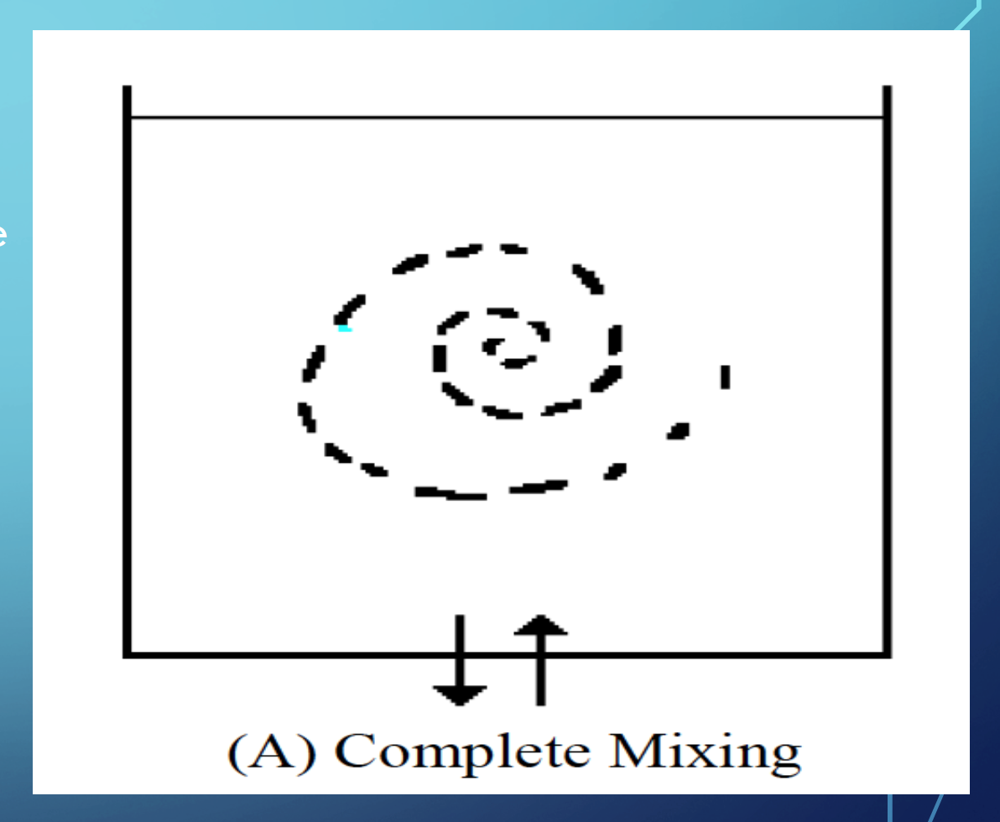
Two-Compartment Mixing. Tank storage divided into two compartments: (1) Inlet/Outlet zone (2) Main Zone When Inlet/Outlet zone is filled, then spills into main zone 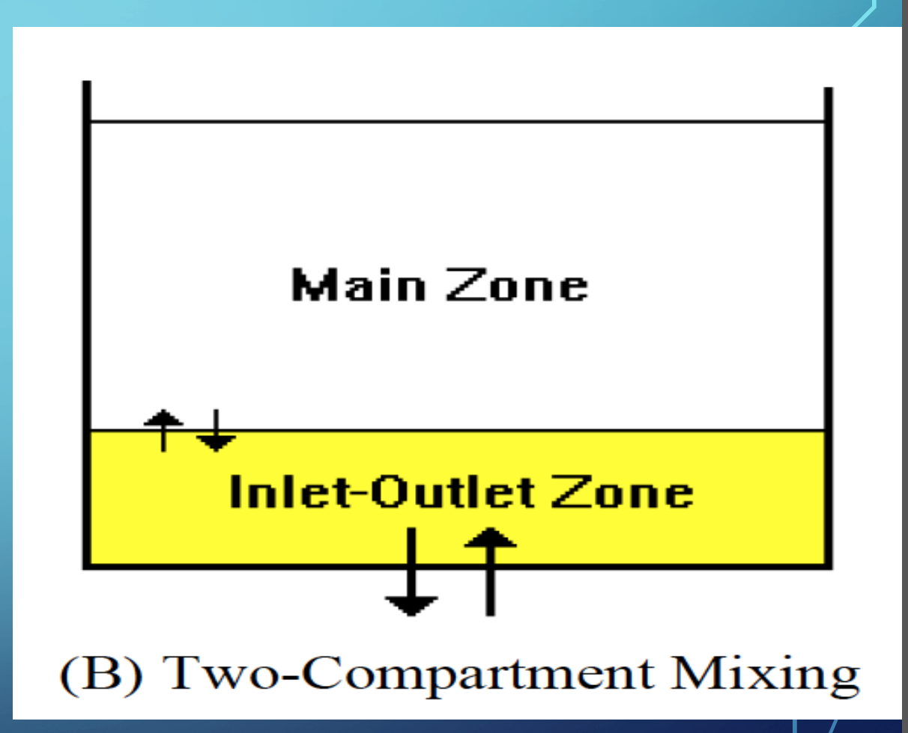
FIFO Plug Flow. The first parcel (volume) of water to enter the tank, is first parcel to leave. Essentially plug-flow through the tank 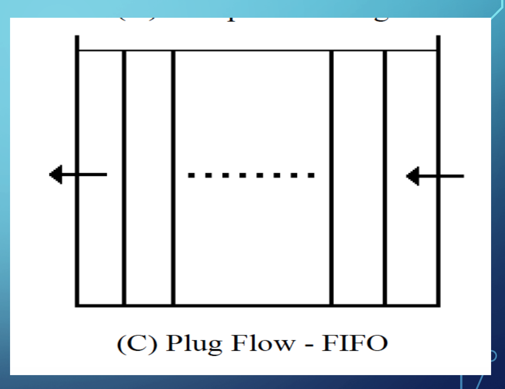
LIFO Plug Flow. The last (most recent) parcel (volume) of water to enter the tank, is first parcel to leave. Essentially stratified-flow in the tank 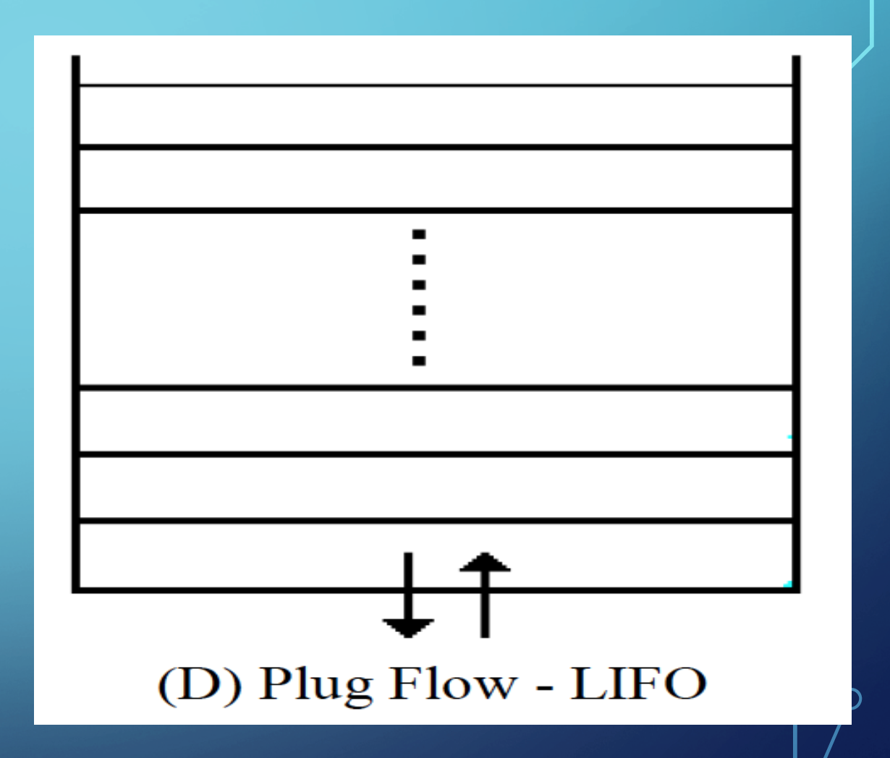
Reactions occur in the bulk phase (in the parcel), and the walls (at the parcel, pipe-wall interface) 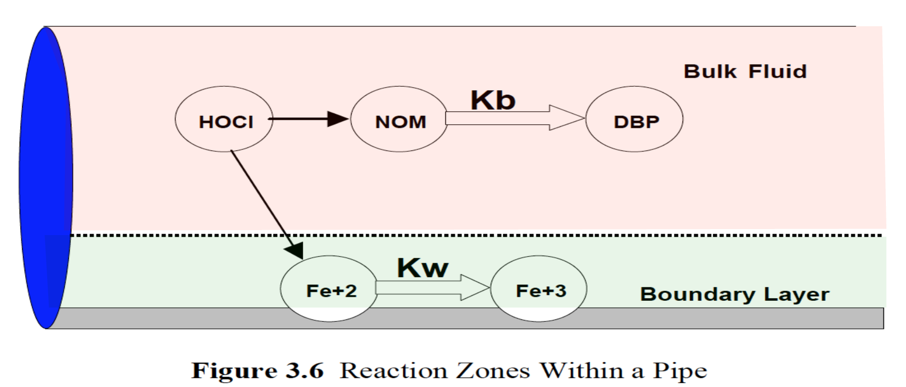. The reaction models are similar in each locale (bulk or wall) with parameters adjusted for their location within a network. 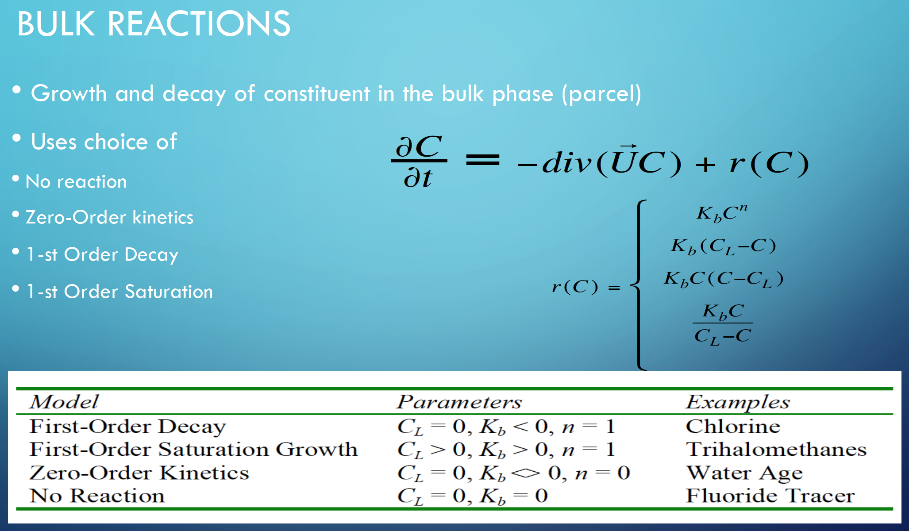
Example#
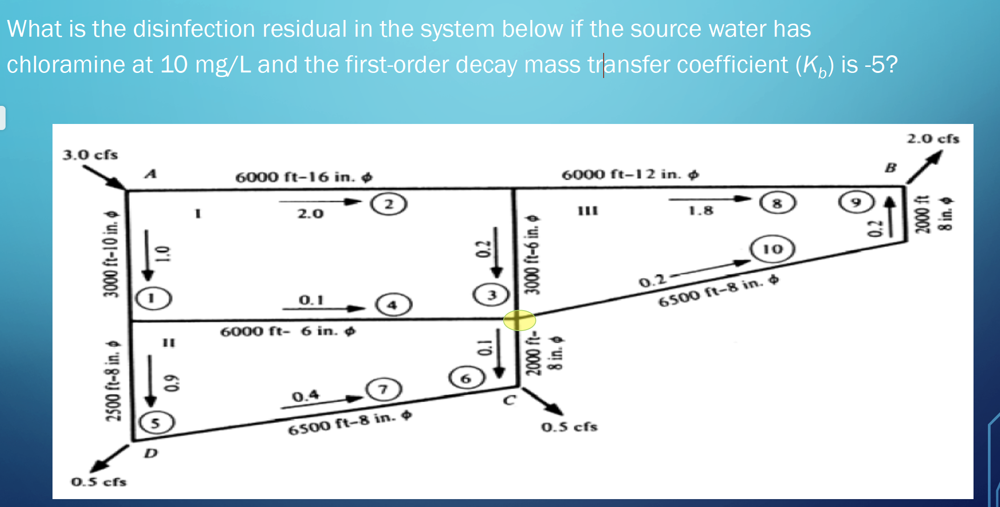
First build and run the hydraulic model.
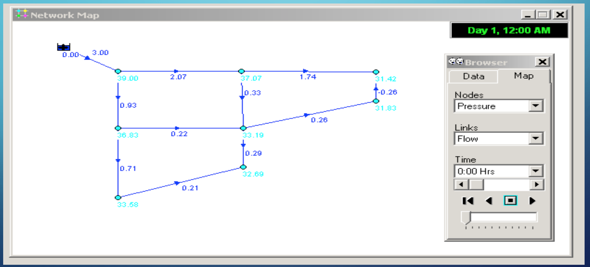
Then set up the quality simulation (actually do it all at once, but we pretend we are doing it in two parts)
First identify a 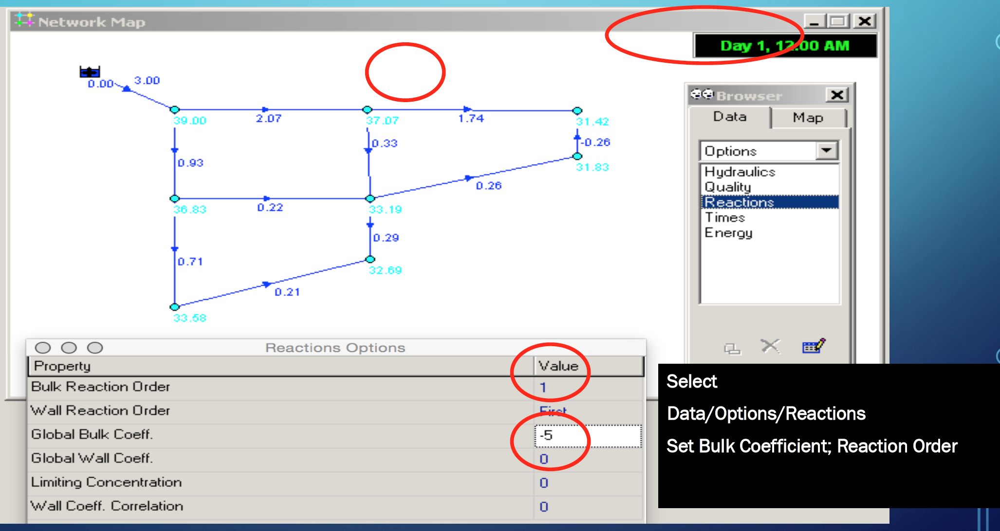
Then a total simulation duration
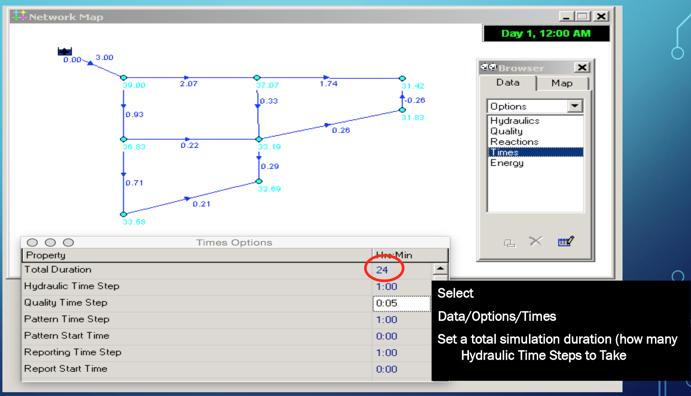
Then supply a source concentration
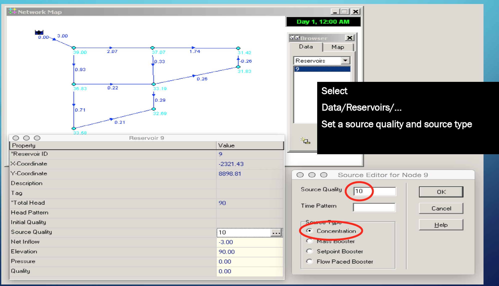
Then run (rerun) the model and interpret the results
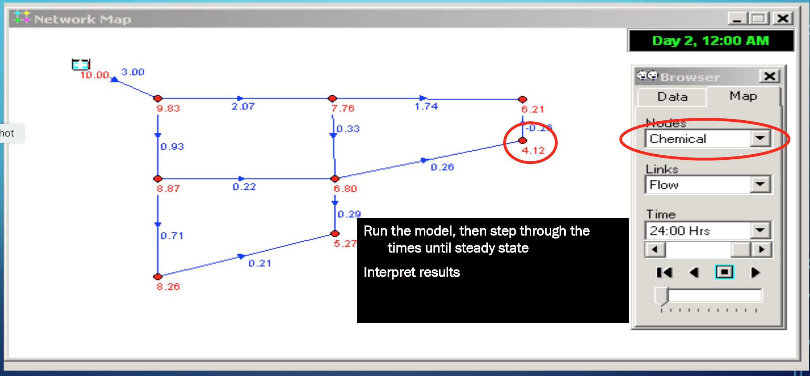
Additional Concepts#
A “tracer” can be used to estimate water age in the system (its treated as a different constituent)
Use Zero-Order reaction with Kb = 1; resulting “concentration” is water age in Hydraulic Time Steps
Multiple sources can be used to estimate mixing in a system (homework)
Intrusions of contaminants can be modeled (inject a dose at a node, and see where it arrives).
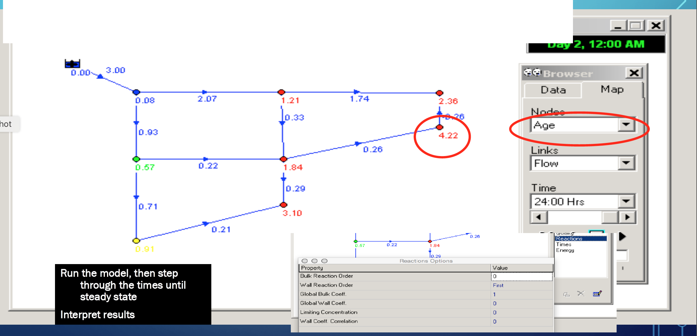